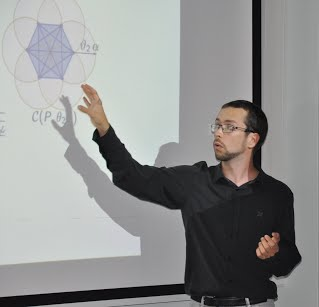

I am currently a Software Development Engineer at Amazon and before that I was a Postdoc at Inria in the Titane team.
My research focuses on application of geometry for computational science. I am interested in both its theoretical (computational geometry, computational topology) and applied aspects (geometry processing, urban reconstruction).
I am now discovering the fascinating world of Machine Learning and distributed computation.
Additional info :